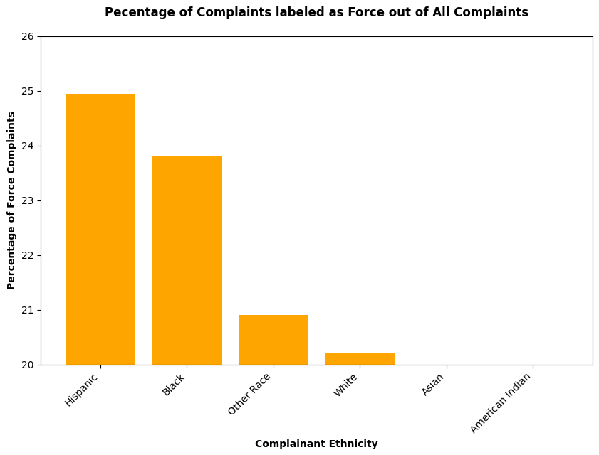
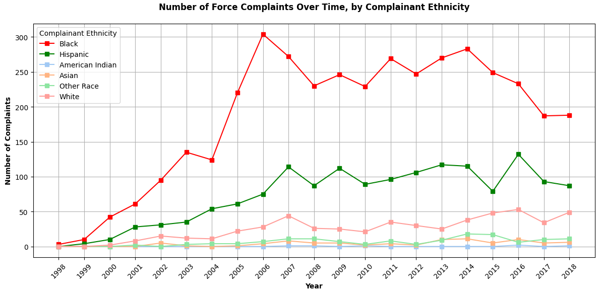
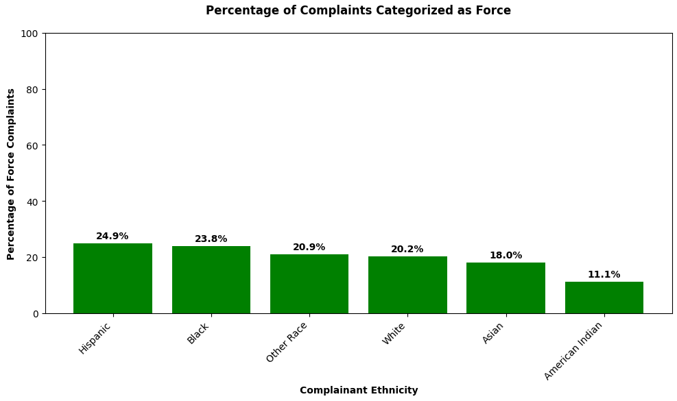
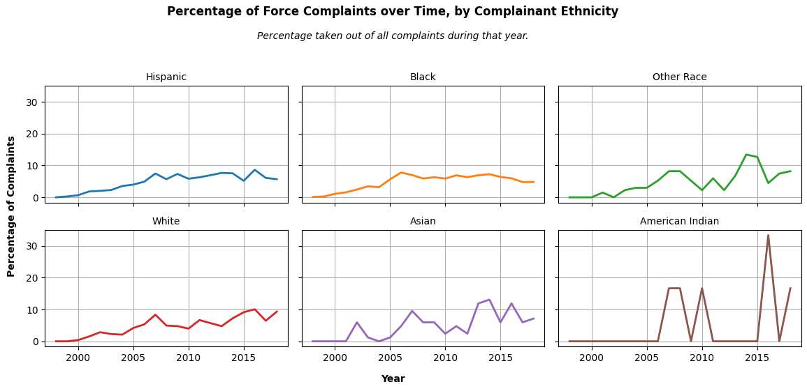

Dataset
Dataset
This projects explores whether certain ethnicities have more forceful encounters with the police than others, as reported by the number of complaints in the dataset. This project features two propositions - both representing one side to the argument. Through the use of misleading visualization techniques such as filtering out certain data, skewing the x or y axis, one of the proposition will try to convince and persuade the viewers through unethical means.
Proposition 1: Graphs and trends suggest that black and hispanic complainants report more forceful encounters compared to other ethnicities.
Graph One
Graph Two
From these two visualizations, we might get the idea that the data is trying to convey that certain ethnicities do in fact have more forceful encounters. Graph One shows that complainants of Hispanic and Black ethnicities have significantly higher percentage of complaints being categorized as Force. And from Graph Two we can see that the number of force complaints are substantially higher than the other ethnicities as well. Could you spot if these visualizations are indeed truthful and non-manipulative?
Before we delve deeper into these graphs, we will take a look at the other side of the coin and analyze Proposition 2 below.
Proposition 2: Graphs and trends suggest that there are no clear indications certain ethnicities report more forceful encounters in complaints.
Graph One
Graph Two
From these two visualizations, we can see the tone shifted dramatically from the first proposition. The data now suggests that different ethnicity groups do not report more force complaints compared to each other.
So what happened here? Let’s take a closer look at Proposition One’s Visualization first. In Graph 1 of Proposition 1, we can see that the y-axis actually starts and 20% and ends at 26%. This design choice stretches the graph and makes it seem like certain ethnicities have significantly more percentages and is an example of a misleading design choice. Furthermore, for the second graph, we can see that the color of the lines for red and blue is very bright and eye-catching; while the colors for the other lines are fainter and in a much more muted color. This was done on purpose and meant to direct the viewer’s eyes onto what the graph wants to convey - which are those two lines. This is one of the two layered design choices included in this graph, the other being the overall context of the visualization. We can see that Red and Green are significantly higher than the rest - but is that really the case? This dataset actually contains a lot more data for these two ethnic groups compared to the others, so naturally their numbers will be a lot higher. This bit of context was not included as the other layer of the misleading visualization, which creates an image that might not be entirely truthful.
If we look at Proposition Two, we can see that the graphs are a lot more ethically visualized. For example, Graph One from Proposition Two is the same data as Graph One from Proposition One but the y-axis is not truncated. With the addition of percentage labels on top, we can see that it now tells an entirely different story and displays a visualization that is vastly different from before. Furthermore, from Graph Two Proposition Two we can see that if we add context to the graphs by separating each ethnicity to be within its own self-contained visualization that their percentage increase is all roughly equal.
From this project, we can see that data visualization can be manipulated in a lot of ways, sometimes even misleadingly. But where do we draw the line between unethical and untruthful designs? We think that ethical analysis and visualization should have truth and transparency as the number one priority. We think persuasion and deception mostly comes from hiding and altering a part of the visualization in a dishonest way. To be ethical is to show the data and its visualization for what it is, and let the viewers decide for themselves whether the proposition or the message of the visualization is something they align with. Forcing an idea through manipulation onto the viewers should be considered unethical.
Lastly, We think boundaries are really important in determining if a visualization is ethically designed. The bounds that we define and draw to distinguish between persuasive choices vs. misleading ones is the intention of the visualization. We think visualizations should be set up in a way where the intention is to persuade and not to manipulate. The viewers should have the chance to make the decision themselves looking at the graphs, and not have a certain viewpoint forcefully presented to them through distorted design choices. These can include scaling the an axis misleadingly, filtering out data with no transparency, and misleading graph design that can inflate or deflate certain data points.